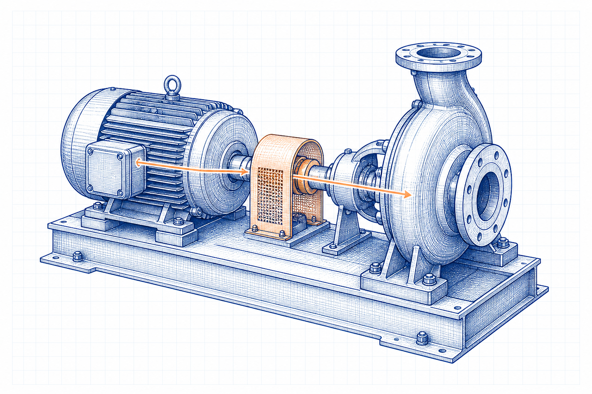

Hydraulic power
Pₕ = ρgQH
ρ is pumped-liquid density, Q is flow in m³/s and H is total dynamic head.
 IndustrialCalculation HubSearch topics, tools, articles...⌕
IndustrialCalculation HubSearch topics, tools, articles...⌕Existing engineering calculator
Calculate hydraulic power, shaft power, motor input power and a preliminary standard motor recommendation from rated flow, head, liquid density, efficiency and design margin.

Select the pumped liquid, then enter rated flow, total dynamic head, efficiency values and design margin. The liquid density is editable so verified project data can be used.
Liquid density directly affects hydraulic power. Presets are typical values only; use verified operating-condition data for final selection.
Engineering knowledge
Pump selection starts with the required flow and total dynamic head. Hydraulic power also depends directly on pumped-liquid density. The calculated hydraulic power must be increased to allow for pump and motor losses, then a practical motor rating is selected with a suitable design margin.
Total dynamic head must already include static head and all relevant system losses. Use actual density at operating temperature and composition.
Explore Fluid Mechanics and Piping →Pₕ = ρgQH
ρ is pumped-liquid density, Q is flow in m³/s and H is total dynamic head.
Pₛ = Pₕ / ηₚ
Pump efficiency increases the required shaft power.
Pᵈ = Pₛ / ηₘ × (1 + margin)
The calculator selects the next listed standard motor rating.
At the same flow and head, a denser liquid needs proportionally more hydraulic power.
Yes. Select the custom option and enter a verified operating density in kg/m³.
No. It estimates a motor size from entered duty conditions; hydraulic suitability still requires a pump-curve review.